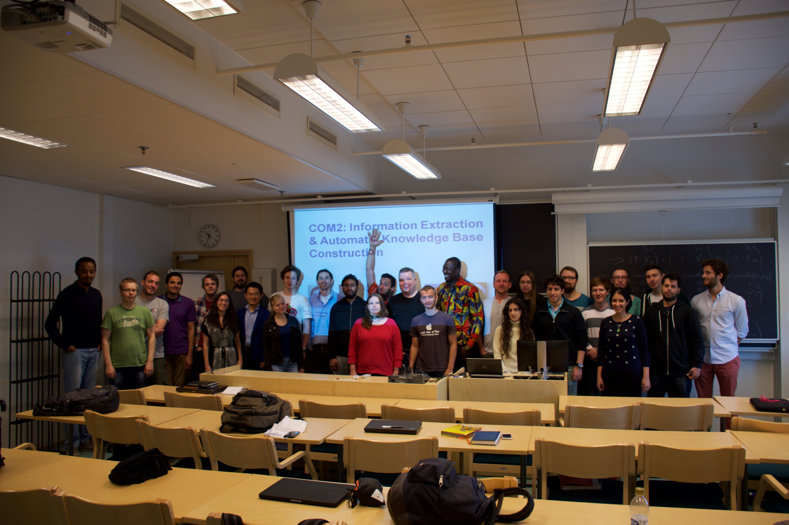

COM2: Information Extraction & Automatic Knowledge-Base Construction
Summer school course COM2: Information Extraction & Automatic Knowledge-Base Construction (TIES671)

Course information
- Time: 10.–14.8.2015
- Place: Ag C234 (lectures), Ag C331.3 (demonstrations). In addition optional demonstrations in the afternoons five times a week four hours per day.
- Lecturer: Prof. Martin Theobald (University of Ulm, Germany)
- Coordinator: Michael Cochez
- Tutor: Isfandyar Khan Mian
- Lectures: 20 hours (4 x 5 h) with interactive exercises. Five hour blocks would itself be divided in 3 hours of lectures and two hours of exercises.
- Credits: 3 ECTS
- Passing: Obligatory attendance at lectures. Practical task based on theory lectures, programming challenge with options for team work.
- Grading: Grading scale of 0 to 5
- Prerequisites: Basic knowledge in databases, basic programming skills (Java/C++), prior course in statistics and/or probability theory is a plus.
- Abstract: The Web bears the potential of being the world’s greatest encyclopedic source, but we are still far from fully exploiting this potential. Valuable scientific and cultural content is interspersed with a huge amount of noisy, low-quality, unstructured text and media. The proliferation of knowledge-sharing communities like Wikipedia and recent advances in automated information-extraction technologies from otherwise unstructured Web documents give rise to an unprecedented opportunity: Can we systematically harvest facts from the Web and compile them into a comprehensive machine-readable knowledge base? Such a knowledge base would contain not only the world’s entities, but also their semantic properties, and their relationships with each other.Imagine a “Structured Wikipedia” that has the same scale and richness as Wikipedia itself, but offers a precise and concise representation of knowledge, e.g., in the versatile RDF/S data format. This would enable expressive and highly precise querying, e.g., in the SPARQL language (or appropriate extensions), with additional capabilities for informative ranking of query results. The benefits from solving the above challenge would obviously be enormous. Applications include:
- a formalized machine-readable encyclopedia that can be queried with high precision like a semantic database;
- a key asset for disambiguating entities by supporting fast and accurate mappings of textual phrases onto named entities in the knowledge base; and an enabler for entity-relationship-oriented semantic search on the Web, for detecting entities and relations in Web pages and reasoning about them in expressive (probabilistic) logics;
- a backbone for natural-language question answering that would aid in dealing with entities and their relationships in answering who/where/when/ etc. questions;
- a catalyst for the acquisition of further knowledge and the largely automated maintenance and growth of the knowledge base. Each of the above aspects will be captured in the form of a 3-hour lecture. Each lecture provides an overview of the theoretical foundations of the respective block and summarizes recent research results in the related fields. A block is complemented by a 2 hour interactive exercise session with a final programming task, during which students are able to practice their newly gained knowledge.
The course is organized in cooperation with the Department of Mathematical Information Technology of the University of Jyväskylä.
Lecture slides
Resources for the IE challenge
- Data for the challenge SummerSchoolData.zip (available until late August 2015)
- Java Template for Parsing the Data Files (Wiki Articles & PATTY Patterns)
- YAGO2 subset about scientists
- Mapping between Stanford NLP and yago patterns POS tags
"CC" -> "[[con]]" "CD" -> "[[num]]" "JJ" -> "[[adj]]" "MD" -> "[[mod]]" "DT" -> "[[det]]" "PRP$" -> "[[prp]]" "PRP" -> "[[pro]]”
Links
- Course information in Korppi TIES671
- Course information on the summer school webpage